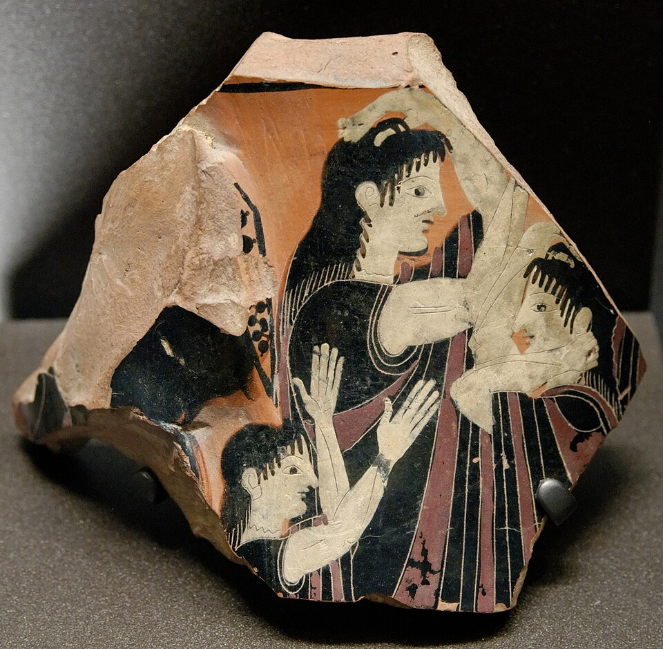

Saint / folklore
Professional wailers

Background
Mourners paid to weep and lament at a funeral, amplifying the family’s display of loss.
Paid mourners are among the oldest documented customs of the Mediterranean. Ancient Egyptian tomb paintings show women tearing their hair over the dead. Greek vases show the ritual lament (threnos). The Romans hired praeficae, women who led the lament at a funeral. In southern Italy the prefiche survived well into the twentieth century, especially in rural Lucania, Calabria and Sardinia.
The anthropologist Ernesto de Martino studied these laments in Lucania in the 1950s. In Morte e pianto rituale (1958) he argued that ritual weeping was not empty display. It gave grief a fixed form, so that mourners could lose themselves in it without being overwhelmed. Wailers improvised verses praising the dead and reproaching death, set to traditional melodies. The Church discouraged the practice for centuries, and it died out only with the old peasant world.
In Naples ’44
Lewis notes ‘several professional wailers in attendance’ at the funeral of a Carabiniere murdered by bandits at Casoria.
Appears in 1 diary entry.
-
December 5 1943Lewis avoids an unwanted arrest by spending the day on unrelated errands, reflecting on the unit's discomfort with being used for private vendettas.
hired mourners attend funerals to perform grief, reinforcing the family's display of loss
Use ← → to move between pages